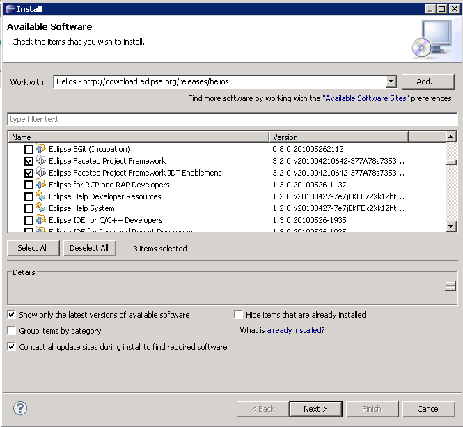
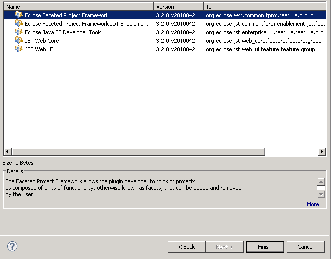

Before you create a new server definition in the Workbench, you must install a number of Eclipse Web Developer Tools in the IDE.
To install the prerequisite web development tools:
-
Click
 .
.
-
In the Available Software window, type or select the Helios site next to the Work with field. If you do
not have any sites saved in the drop-down list, do one of the following:
- Click the Add button and type the name and location of the site in the Add Repository.
Click OK.
- Click the Available Software Sites hyperlink and select
Helios - http://download.eclipse.org/releases/helios.
- Click the Available Software Sites hyperlink, in the Preferences window and select the Helios check box.
Click Add and OK.
-
In the Available Software window, uncheck the Group items by category
check box.

-
Select the following items from the list of available software and click Finish.
